SỔ TAY UI/UX BUILDERHƯỚNG DẪN BẰNG ẢNHTên trang và vị trí đang sửa
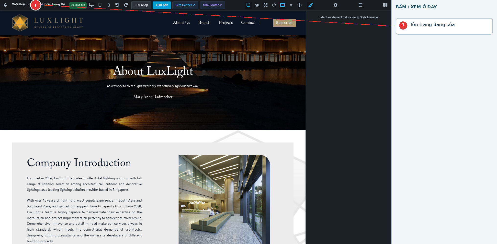
Một điểm trên ảnh, một việc cần làm. Nhãn đặt ngoài giao diện để ảnh vẫn đọc rõ.- Xem tên trang ở góc trên trái trước khi bắt đầu để không sửa nhầm.
- Thực hiện xong, quan sát thay đổi trên canvas trước khi chuyển sang việc khác.
SỔ TAY UI/UX BUILDERHƯỚNG DẪN BẰNG ẢNHQuay lại danh sách trang
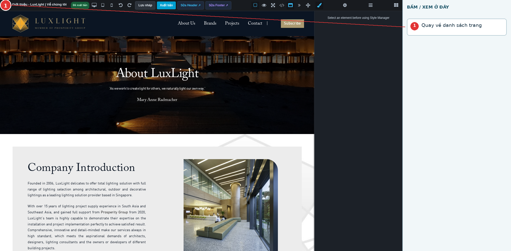
Một điểm trên ảnh, một việc cần làm. Nhãn đặt ngoài giao diện để ảnh vẫn đọc rõ.- Bấm mũi tên quay lại khi cần chọn một trang khác để sửa.
- Thực hiện xong, quan sát thay đổi trên canvas trước khi chuyển sang việc khác.
SỔ TAY UI/UX BUILDERHƯỚNG DẪN BẰNG ẢNHLưu nháp
Một điểm trên ảnh, một việc cần làm. Nhãn đặt ngoài giao diện để ảnh vẫn đọc rõ.- Bấm Lưu nháp sau mỗi nhóm thay đổi; khách chưa nhìn thấy bản nháp.
- Thực hiện xong, quan sát thay đổi trên canvas trước khi chuyển sang việc khác.
SỔ TAY UI/UX BUILDERHƯỚNG DẪN BẰNG ẢNHXuất bản
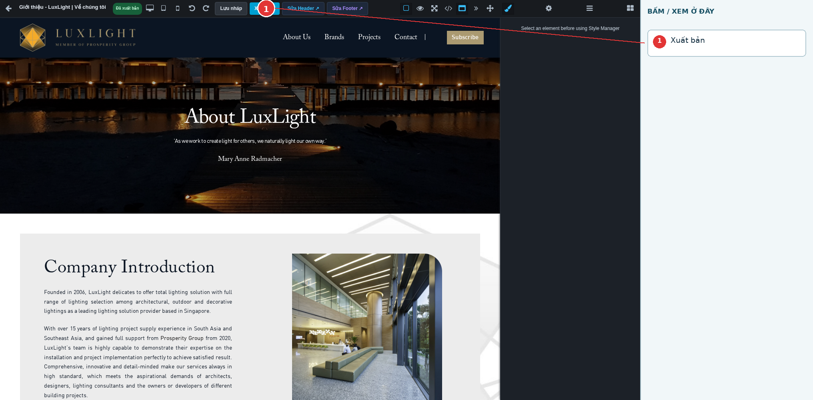
Một điểm trên ảnh, một việc cần làm. Nhãn đặt ngoài giao diện để ảnh vẫn đọc rõ.- Chỉ bấm Xuất bản sau khi đã kiểm tra trên máy tính, tablet và điện thoại.
- Thực hiện xong, quan sát thay đổi trên canvas trước khi chuyển sang việc khác.
SỔ TAY UI/UX BUILDERHƯỚNG DẪN BẰNG ẢNHHoàn tác
Một điểm trên ảnh, một việc cần làm. Nhãn đặt ngoài giao diện để ảnh vẫn đọc rõ.- Bấm mũi tên cong sang trái để bỏ thao tác vừa làm; kiểm tra nội dung trước khi lưu.
- Thực hiện xong, quan sát thay đổi trên canvas trước khi chuyển sang việc khác.
SỔ TAY UI/UX BUILDERHƯỚNG DẪN BẰNG ẢNHLàm lại
Một điểm trên ảnh, một việc cần làm. Nhãn đặt ngoài giao diện để ảnh vẫn đọc rõ.- Bấm mũi tên cong sang phải khi cần khôi phục thao tác vừa hoàn tác.
- Thực hiện xong, quan sát thay đổi trên canvas trước khi chuyển sang việc khác.
SỔ TAY UI/UX BUILDERHƯỚNG DẪN BẰNG ẢNHKiểm tra Desktop
Một điểm trên ảnh, một việc cần làm. Nhãn đặt ngoài giao diện để ảnh vẫn đọc rõ.- Đây là khung máy tính. Luôn quay lại kiểm tra sau khi chỉnh tablet hoặc điện thoại.
- Thực hiện xong, quan sát thay đổi trên canvas trước khi chuyển sang việc khác.
SỔ TAY UI/UX BUILDERHƯỚNG DẪN BẰNG ẢNHKiểm tra Tablet
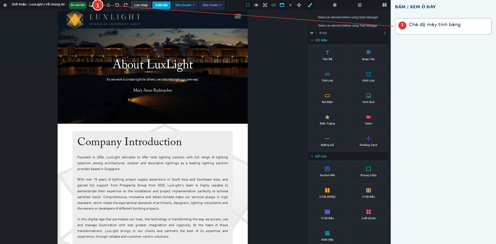
Một điểm trên ảnh, một việc cần làm. Nhãn đặt ngoài giao diện để ảnh vẫn đọc rõ.- Bấm biểu tượng tablet, kiểm tra cột, chữ và nút trước khi lưu nháp.
- Thực hiện xong, quan sát thay đổi trên canvas trước khi chuyển sang việc khác.
SỔ TAY UI/UX BUILDERHƯỚNG DẪN BẰNG ẢNHKiểm tra Mobile
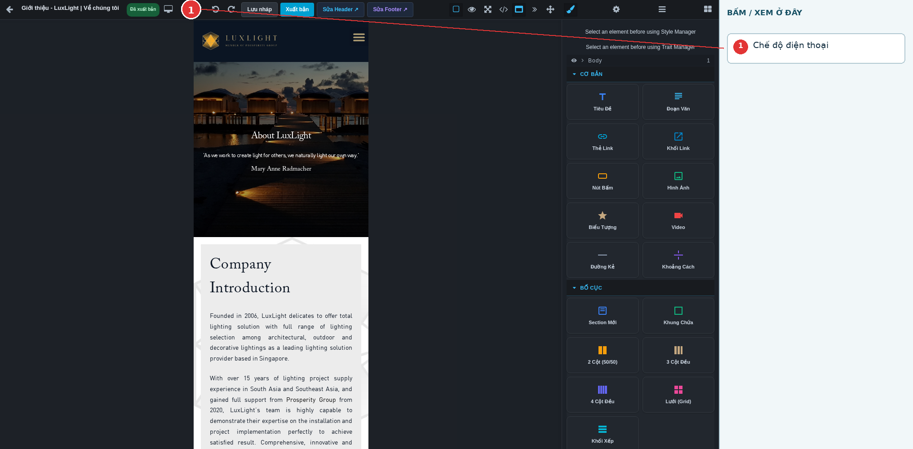
Một điểm trên ảnh, một việc cần làm. Nhãn đặt ngoài giao diện để ảnh vẫn đọc rõ.- Bấm biểu tượng điện thoại rồi cuộn hết trang để tìm chữ tràn và nút khó bấm.
- Thực hiện xong, quan sát thay đổi trên canvas trước khi chuyển sang việc khác.
SỔ TAY UI/UX BUILDERHƯỚNG DẪN BẰNG ẢNHKiểu dáng
Một điểm trên ảnh, một việc cần làm. Nhãn đặt ngoài giao diện để ảnh vẫn đọc rõ.- Chọn phần tử trước, sau đó mở Kiểu dáng để đổi màu, cỡ, khoảng cách và nền.
- Thực hiện xong, quan sát thay đổi trên canvas trước khi chuyển sang việc khác.
SỔ TAY UI/UX BUILDERHƯỚNG DẪN BẰNG ẢNHThuộc tính
Một điểm trên ảnh, một việc cần làm. Nhãn đặt ngoài giao diện để ảnh vẫn đọc rõ.- Mở Thuộc tính để điền nội dung riêng của phần đã chọn, như link, ảnh hoặc video.
- Thực hiện xong, quan sát thay đổi trên canvas trước khi chuyển sang việc khác.
SỔ TAY UI/UX BUILDERHƯỚNG DẪN BẰNG ẢNHCây lớp
Một điểm trên ảnh, một việc cần làm. Nhãn đặt ngoài giao diện để ảnh vẫn đọc rõ.- Dùng Cây lớp khi bấm trực tiếp chưa chọn đúng chữ, ảnh, nút hoặc vùng chứa.
- Thực hiện xong, quan sát thay đổi trên canvas trước khi chuyển sang việc khác.
SỔ TAY UI/UX BUILDERHƯỚNG DẪN BẰNG ẢNHThư viện Khối
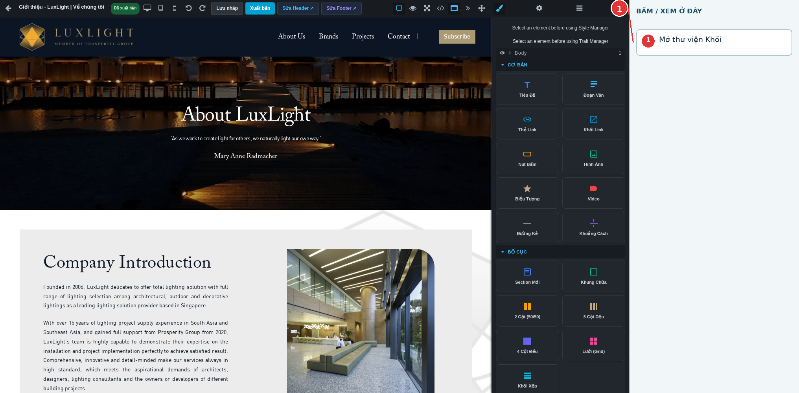
Một điểm trên ảnh, một việc cần làm. Nhãn đặt ngoài giao diện để ảnh vẫn đọc rõ.- Mở Khối, chọn loại cần dùng, rồi kéo thả khối vào vị trí trên trang.
- Thực hiện xong, quan sát thay đổi trên canvas trước khi chuyển sang việc khác.
SỔ TAY UI/UX BUILDERHƯỚNG DẪN BẰNG ẢNHXem trước
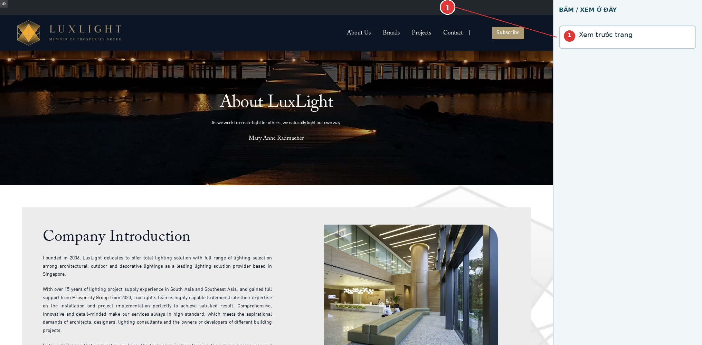
Một điểm trên ảnh, một việc cần làm. Nhãn đặt ngoài giao diện để ảnh vẫn đọc rõ.- Dùng Xem trước để xem trang không có đường viền chọn; thoát xem trước để sửa tiếp.
- Thực hiện xong, quan sát thay đổi trên canvas trước khi chuyển sang việc khác.
SỔ TAY UI/UX BUILDERHƯỚNG DẪN BẰNG ẢNHHiện viền các phần tử
Một điểm trên ảnh, một việc cần làm. Nhãn đặt ngoài giao diện để ảnh vẫn đọc rõ.- Bật biểu tượng con mắt khi cần nhìn ranh giới các vùng trên trang; tắt đi để quan sát bố cục sạch hơn.
- Thực hiện xong, quan sát thay đổi trên canvas trước khi chuyển sang việc khác.
SỔ TAY UI/UX BUILDERHƯỚNG DẪN BẰNG ẢNHToàn màn hình
Một điểm trên ảnh, một việc cần làm. Nhãn đặt ngoài giao diện để ảnh vẫn đọc rõ.- Dùng toàn màn hình khi cần thêm không gian để kiểm tra bố cục; bấm lại để thoát.
- Thực hiện xong, quan sát thay đổi trên canvas trước khi chuyển sang việc khác.
SỔ TAY UI/UX BUILDERHƯỚNG DẪN BẰNG ẢNHMã nguồn (dành cho kỹ thuật)
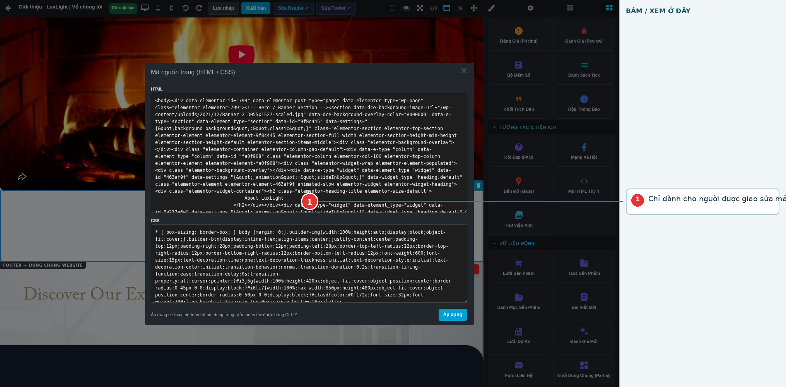
Một điểm trên ảnh, một việc cần làm. Nhãn đặt ngoài giao diện để ảnh vẫn đọc rõ.- Không dùng mục này khi chỉ thay chữ, ảnh, nút hoặc khối. Nếu cần sửa mã, nhờ người phụ trách kỹ thuật.
- Thực hiện xong, quan sát thay đổi trên canvas trước khi chuyển sang việc khác.
SỔ TAY UI/UX BUILDERHƯỚNG DẪN BẰNG ẢNHHiện Header và Footer khi sửa
Một điểm trên ảnh, một việc cần làm. Nhãn đặt ngoài giao diện để ảnh vẫn đọc rõ.- Bật biểu tượng khung trang để xem Header/Footer bao quanh nội dung; phần này chỉ để đối chiếu khi sửa trang chính.
- Thực hiện xong, quan sát thay đổi trên canvas trước khi chuyển sang việc khác.
SỔ TAY UI/UX BUILDERHƯỚNG DẪN BẰNG ẢNHThu gọn bảng bên phải
Một điểm trên ảnh, một việc cần làm. Nhãn đặt ngoài giao diện để ảnh vẫn đọc rõ.- Thu gọn bảng bên phải khi cần xem canvas rộng hơn; mở lại trước khi chỉnh Thuộc tính hoặc Kiểu dáng.
- Thực hiện xong, quan sát thay đổi trên canvas trước khi chuyển sang việc khác.
SỔ TAY UI/UX BUILDERHƯỚNG DẪN BẰNG ẢNHKéo tự do
Một điểm trên ảnh, một việc cần làm. Nhãn đặt ngoài giao diện để ảnh vẫn đọc rõ.- Chỉ bật kéo tự do khi đã hiểu bố cục. Với đa số nội dung, kéo thả khối trong bố cục cột sẽ an toàn hơn.
- Thực hiện xong, quan sát thay đổi trên canvas trước khi chuyển sang việc khác.
SỔ TAY UI/UX BUILDERHƯỚNG DẪN BẰNG ẢNHSửa Header
Một điểm trên ảnh, một việc cần làm. Nhãn đặt ngoài giao diện để ảnh vẫn đọc rõ.- Header thường xuất hiện ở nhiều trang. Kiểm tra logo, menu và nút kỹ trước khi xuất bản.
- Thực hiện xong, quan sát thay đổi trên canvas trước khi chuyển sang việc khác.
SỔ TAY UI/UX BUILDERHƯỚNG DẪN BẰNG ẢNHSửa Footer
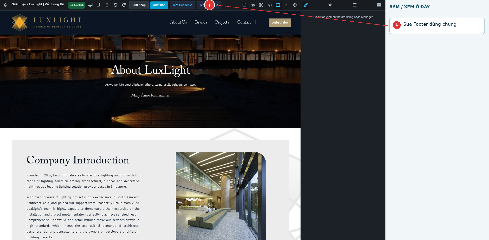
Một điểm trên ảnh, một việc cần làm. Nhãn đặt ngoài giao diện để ảnh vẫn đọc rõ.- Footer thường xuất hiện ở nhiều trang. Kiểm tra địa chỉ, số điện thoại, email và các link.
- Thực hiện xong, quan sát thay đổi trên canvas trước khi chuyển sang việc khác.
SỔ TAY UI/UX BUILDERHƯỚNG DẪN BẰNG ẢNHSửa tiêu đề và đoạn chữ
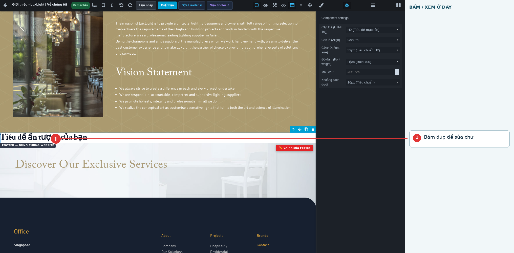
Một điểm trên ảnh, một việc cần làm. Nhãn đặt ngoài giao diện để ảnh vẫn đọc rõ.- Chọn đúng dòng chữ, bấm đúp để gõ lại, rồi bấm ra ngoài để kiểm tra.
- Thực hiện xong, quan sát thay đổi trên canvas trước khi chuyển sang việc khác.
SỔ TAY UI/UX BUILDERHƯỚNG DẪN BẰNG ẢNHThay ảnh
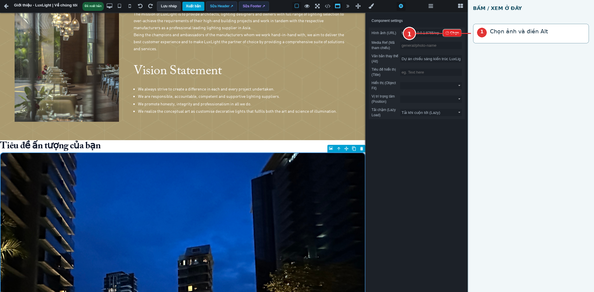
Một điểm trên ảnh, một việc cần làm. Nhãn đặt ngoài giao diện để ảnh vẫn đọc rõ.- Chọn ảnh trên trang, bấm Chọn trong Thuộc tính, sau đó điền Alt mô tả ngắn về ảnh.
- Thực hiện xong, quan sát thay đổi trên canvas trước khi chuyển sang việc khác.
SỔ TAY UI/UX BUILDERHƯỚNG DẪN BẰNG ẢNHSửa nút và link
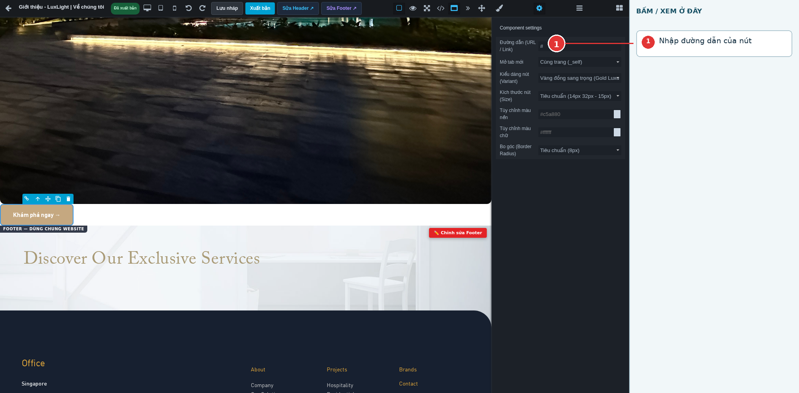
Một điểm trên ảnh, một việc cần làm. Nhãn đặt ngoài giao diện để ảnh vẫn đọc rõ.- Chọn nút, điền đường dẫn, chọn cách mở liên kết, rồi bấm thử sau khi xuất bản.
- Thực hiện xong, quan sát thay đổi trên canvas trước khi chuyển sang việc khác.
SỔ TAY UI/UX BUILDERHƯỚNG DẪN BẰNG ẢNHChèn video
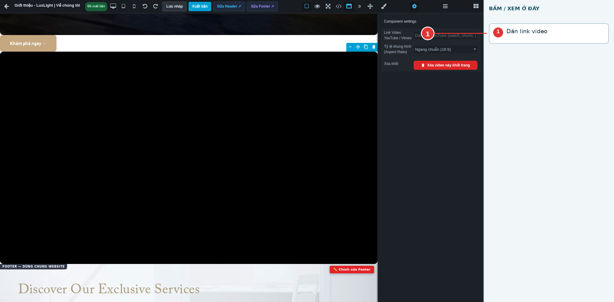
Một điểm trên ảnh, một việc cần làm. Nhãn đặt ngoài giao diện để ảnh vẫn đọc rõ.- Chọn khung video, dán link YouTube hoặc Vimeo và kiểm tra tỷ lệ khung.
- Thực hiện xong, quan sát thay đổi trên canvas trước khi chuyển sang việc khác.
SỔ TAY UI/UX BUILDERHƯỚNG DẪN BẰNG ẢNHDùng dữ liệu động
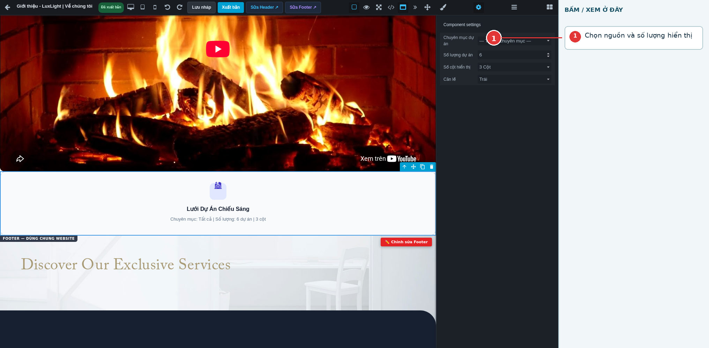
Một điểm trên ảnh, một việc cần làm. Nhãn đặt ngoài giao diện để ảnh vẫn đọc rõ.- Chọn nguồn, danh mục, số lượng hoặc số cột. Sửa nội dung gốc trong phần quản lý dữ liệu.
- Thực hiện xong, quan sát thay đổi trên canvas trước khi chuyển sang việc khác.
SỔ TAY UI/UX BUILDERHƯỚNG DẪN BẰNG ẢNHMở Header để sửa
Một điểm trên ảnh, một việc cần làm. Nhãn đặt ngoài giao diện để ảnh vẫn đọc rõ.- Bấm Sửa Header để vào phần dùng chung. Lưu nháp và kiểm tra nhiều trang trước khi xuất bản.
- Thực hiện xong, quan sát thay đổi trên canvas trước khi chuyển sang việc khác.
SỔ TAY UI/UX BUILDERHƯỚNG DẪN BẰNG ẢNHMở Footer để sửa
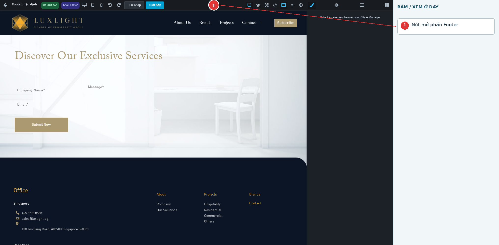
Một điểm trên ảnh, một việc cần làm. Nhãn đặt ngoài giao diện để ảnh vẫn đọc rõ.- Bấm Sửa Footer để vào phần dùng chung. Lưu nháp và kiểm tra nhiều trang trước khi xuất bản.
- Thực hiện xong, quan sát thay đổi trên canvas trước khi chuyển sang việc khác.
SỔ TAY UI/UX BUILDERHƯỚNG DẪN BẰNG ẢNHXác nhận xuất bản
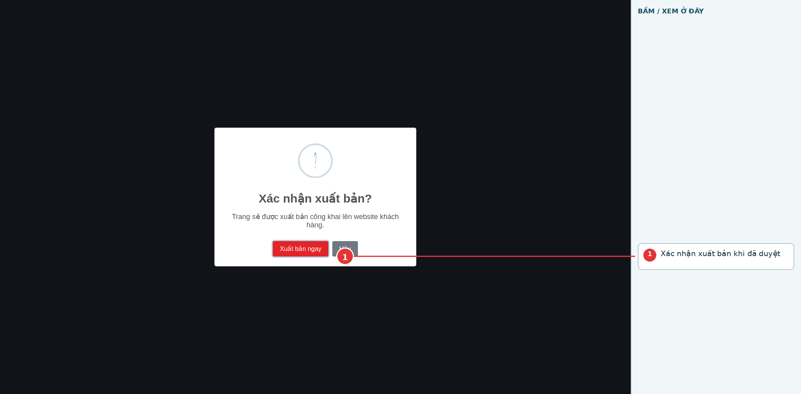
Một điểm trên ảnh, một việc cần làm. Nhãn đặt ngoài giao diện để ảnh vẫn đọc rõ.- Đọc lại hộp xác nhận. Nếu chưa chắc, bấm Hủy và tiếp tục sửa bản nháp.
- Thực hiện xong, quan sát thay đổi trên canvas trước khi chuyển sang việc khác.
SỔ TAY UI/UX BUILDERHƯỚNG DẪN BẰNG ẢNHKhối 1: Tiêu Đề
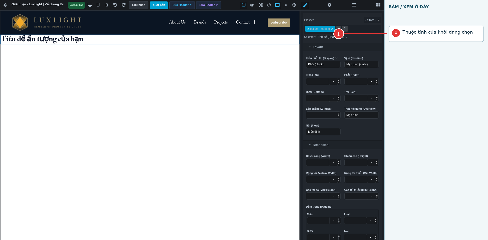
Nhóm CƠ BẢN. Ảnh mở đúng bảng chỉnh sửa của khối.- Kéo khối Tiêu Đề vào trang.
- Bấm vào khối vừa thêm để thay nội dung mẫu trong vùng chỉnh sửa bên phải.
- Kiểm tra hiển thị và lưu nháp trước khi thêm khối tiếp theo.
SỔ TAY UI/UX BUILDERHƯỚNG DẪN BẰNG ẢNHKhối 2: Đoạn Văn
Nhóm CƠ BẢN. Ảnh mở đúng bảng chỉnh sửa của khối.- Kéo khối Đoạn Văn vào trang.
- Bấm vào khối vừa thêm để thay nội dung mẫu trong vùng chỉnh sửa bên phải.
- Kiểm tra hiển thị và lưu nháp trước khi thêm khối tiếp theo.
SỔ TAY UI/UX BUILDERHƯỚNG DẪN BẰNG ẢNHKhối 3: Thẻ Link
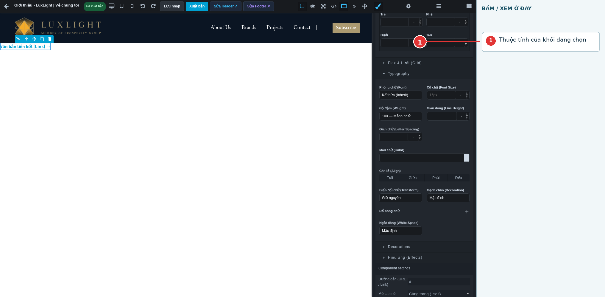
Nhóm CƠ BẢN. Ảnh mở đúng bảng chỉnh sửa của khối.- Kéo khối Thẻ Link vào trang.
- Bấm vào khối vừa thêm để thay nội dung mẫu trong vùng chỉnh sửa bên phải.
- Kiểm tra hiển thị và lưu nháp trước khi thêm khối tiếp theo.
SỔ TAY UI/UX BUILDERHƯỚNG DẪN BẰNG ẢNHKhối 4: Khối Link
Nhóm CƠ BẢN. Ảnh mở đúng bảng chỉnh sửa của khối.- Kéo khối Khối Link vào trang.
- Bấm vào khối vừa thêm để thay nội dung mẫu trong vùng chỉnh sửa bên phải.
- Kiểm tra hiển thị và lưu nháp trước khi thêm khối tiếp theo.
SỔ TAY UI/UX BUILDERHƯỚNG DẪN BẰNG ẢNHKhối 5: Nút Bấm
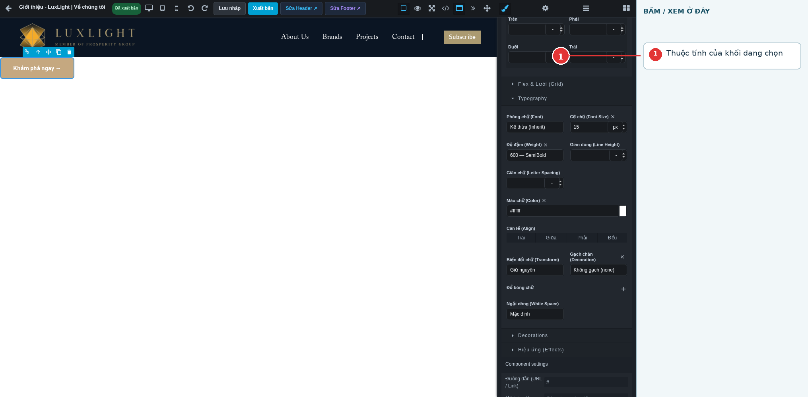
Nhóm CƠ BẢN. Ảnh mở đúng bảng chỉnh sửa của khối.- Kéo khối Nút Bấm vào trang.
- Bấm vào khối vừa thêm để thay nội dung mẫu trong vùng chỉnh sửa bên phải.
- Kiểm tra hiển thị và lưu nháp trước khi thêm khối tiếp theo.
SỔ TAY UI/UX BUILDERHƯỚNG DẪN BẰNG ẢNHKhối 6: Hình Ảnh
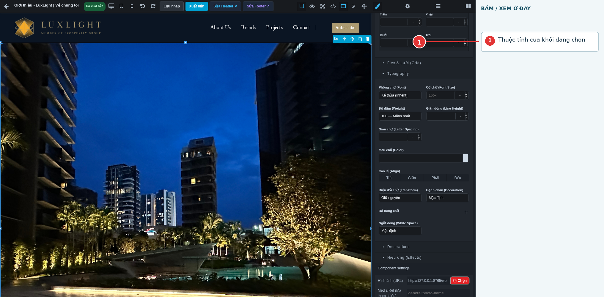
Nhóm CƠ BẢN. Ảnh mở đúng bảng chỉnh sửa của khối.- Kéo khối Hình Ảnh vào trang.
- Bấm vào khối vừa thêm để thay nội dung mẫu trong vùng chỉnh sửa bên phải.
- Kiểm tra hiển thị và lưu nháp trước khi thêm khối tiếp theo.
SỔ TAY UI/UX BUILDERHƯỚNG DẪN BẰNG ẢNHKhối 7: Biểu Tượng
Nhóm CƠ BẢN. Ảnh mở đúng bảng chỉnh sửa của khối.- Kéo khối Biểu Tượng vào trang.
- Bấm vào khối vừa thêm để thay nội dung mẫu trong vùng chỉnh sửa bên phải.
- Kiểm tra hiển thị và lưu nháp trước khi thêm khối tiếp theo.
SỔ TAY UI/UX BUILDERHƯỚNG DẪN BẰNG ẢNHKhối 8: Video
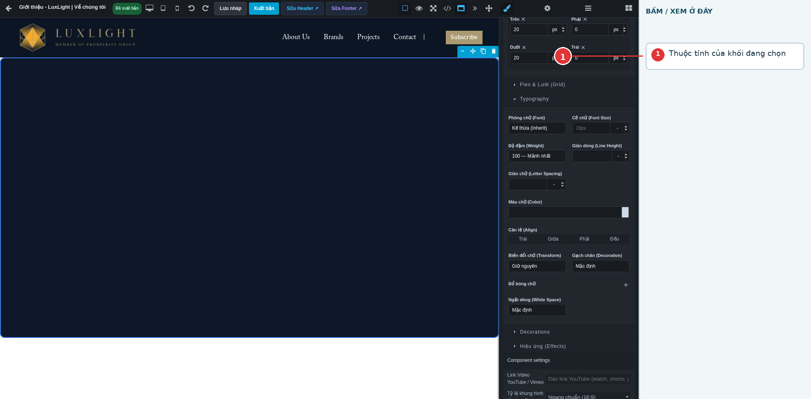
Nhóm CƠ BẢN. Ảnh mở đúng bảng chỉnh sửa của khối.- Kéo khối Video vào trang.
- Bấm vào khối vừa thêm để thay nội dung mẫu trong vùng chỉnh sửa bên phải.
- Kiểm tra hiển thị và lưu nháp trước khi thêm khối tiếp theo.
SỔ TAY UI/UX BUILDERHƯỚNG DẪN BẰNG ẢNHKhối 9: Đường Kẻ
Nhóm CƠ BẢN. Ảnh mở đúng bảng chỉnh sửa của khối.- Kéo khối Đường Kẻ vào trang.
- Bấm vào khối vừa thêm để thay nội dung mẫu trong vùng chỉnh sửa bên phải.
- Kiểm tra hiển thị và lưu nháp trước khi thêm khối tiếp theo.
SỔ TAY UI/UX BUILDERHƯỚNG DẪN BẰNG ẢNHKhối 10: Khoảng Cách
Nhóm CƠ BẢN. Ảnh mở đúng bảng chỉnh sửa của khối.- Kéo khối Khoảng Cách vào trang.
- Bấm vào khối vừa thêm để thay nội dung mẫu trong vùng chỉnh sửa bên phải.
- Kiểm tra hiển thị và lưu nháp trước khi thêm khối tiếp theo.
SỔ TAY UI/UX BUILDERHƯỚNG DẪN BẰNG ẢNHKhối 11: Section Mới
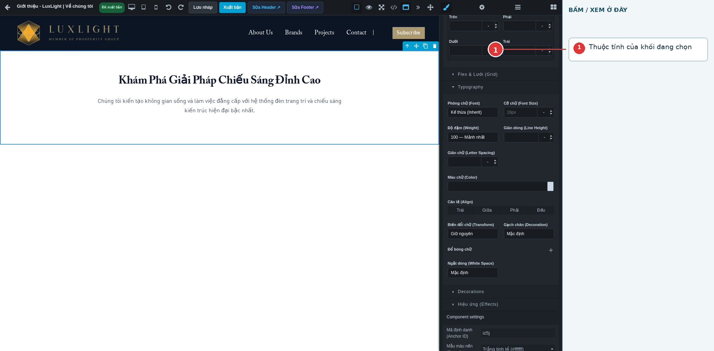
Nhóm BỐ CỤC. Ảnh mở đúng bảng chỉnh sửa của khối.- Kéo Section Mới vào vị trí cần chia bố cục.
- Thả chữ, ảnh, nút hoặc khối khác vào bên trong vùng mới.
- Kiểm tra lại tablet và điện thoại vì số cột có thể cần thu gọn.
SỔ TAY UI/UX BUILDERHƯỚNG DẪN BẰNG ẢNHKhối 12: Khung Chứa
Nhóm BỐ CỤC. Ảnh mở đúng bảng chỉnh sửa của khối.- Kéo Khung Chứa vào vị trí cần chia bố cục.
- Thả chữ, ảnh, nút hoặc khối khác vào bên trong vùng mới.
- Kiểm tra lại tablet và điện thoại vì số cột có thể cần thu gọn.
SỔ TAY UI/UX BUILDERHƯỚNG DẪN BẰNG ẢNHKhối 13: 2 Cột (50/50)
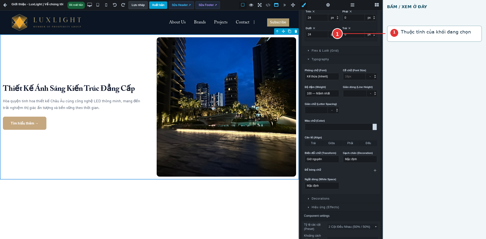
Nhóm BỐ CỤC. Ảnh mở đúng bảng chỉnh sửa của khối.- Kéo 2 Cột (50/50) vào vị trí cần chia bố cục.
- Thả chữ, ảnh, nút hoặc khối khác vào bên trong vùng mới.
- Kiểm tra lại tablet và điện thoại vì số cột có thể cần thu gọn.
SỔ TAY UI/UX BUILDERHƯỚNG DẪN BẰNG ẢNHKhối 14: 3 Cột Đều
Nhóm BỐ CỤC. Ảnh mở đúng bảng chỉnh sửa của khối.- Kéo 3 Cột Đều vào vị trí cần chia bố cục.
- Thả chữ, ảnh, nút hoặc khối khác vào bên trong vùng mới.
- Kiểm tra lại tablet và điện thoại vì số cột có thể cần thu gọn.
SỔ TAY UI/UX BUILDERHƯỚNG DẪN BẰNG ẢNHKhối 15: 4 Cột Đều
Nhóm BỐ CỤC. Ảnh mở đúng bảng chỉnh sửa của khối.- Kéo 4 Cột Đều vào vị trí cần chia bố cục.
- Thả chữ, ảnh, nút hoặc khối khác vào bên trong vùng mới.
- Kiểm tra lại tablet và điện thoại vì số cột có thể cần thu gọn.
SỔ TAY UI/UX BUILDERHƯỚNG DẪN BẰNG ẢNHKhối 16: Lưới (Grid)
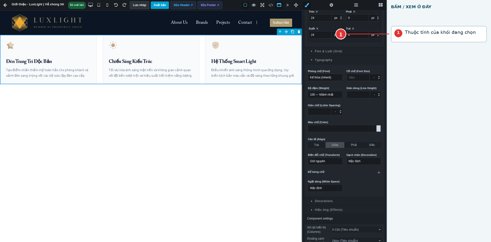
Nhóm BỐ CỤC. Ảnh mở đúng bảng chỉnh sửa của khối.- Kéo Lưới (Grid) vào vị trí cần chia bố cục.
- Thả chữ, ảnh, nút hoặc khối khác vào bên trong vùng mới.
- Kiểm tra lại tablet và điện thoại vì số cột có thể cần thu gọn.
SỔ TAY UI/UX BUILDERHƯỚNG DẪN BẰNG ẢNHKhối 17: Khối Xếp
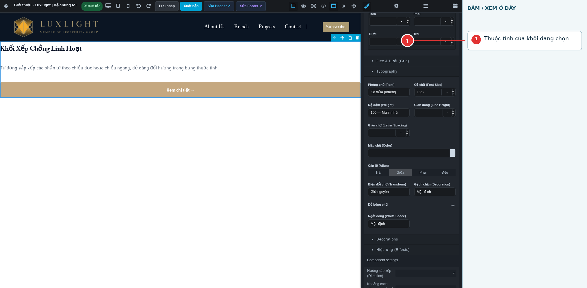
Nhóm BỐ CỤC. Ảnh mở đúng bảng chỉnh sửa của khối.- Kéo Khối Xếp vào vị trí cần chia bố cục.
- Thả chữ, ảnh, nút hoặc khối khác vào bên trong vùng mới.
- Kiểm tra lại tablet và điện thoại vì số cột có thể cần thu gọn.
SỔ TAY UI/UX BUILDERHƯỚNG DẪN BẰNG ẢNHKhối 18: Hộp Biểu Tượng
Nhóm THẺ & NỘI DUNG. Ảnh mở đúng bảng chỉnh sửa của khối.- Kéo khối Hộp Biểu Tượng vào trang.
- Bấm vào khối vừa thêm để thay nội dung mẫu trong vùng chỉnh sửa bên phải.
- Kiểm tra hiển thị và lưu nháp trước khi thêm khối tiếp theo.
SỔ TAY UI/UX BUILDERHƯỚNG DẪN BẰNG ẢNHKhối 19: Hộp Hình Ảnh
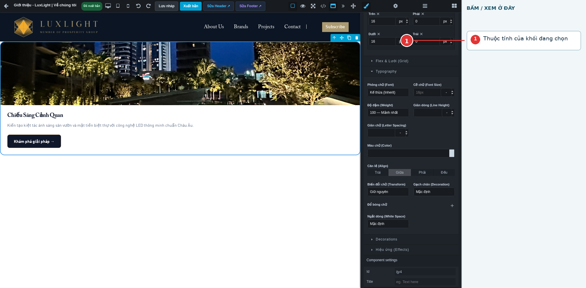
Nhóm THẺ & NỘI DUNG. Ảnh mở đúng bảng chỉnh sửa của khối.- Kéo khối Hộp Hình Ảnh vào trang.
- Bấm vào khối vừa thêm để thay nội dung mẫu trong vùng chỉnh sửa bên phải.
- Kiểm tra hiển thị và lưu nháp trước khi thêm khối tiếp theo.
SỔ TAY UI/UX BUILDERHƯỚNG DẪN BẰNG ẢNHKhối 20: Bảng Giá (Pricing)
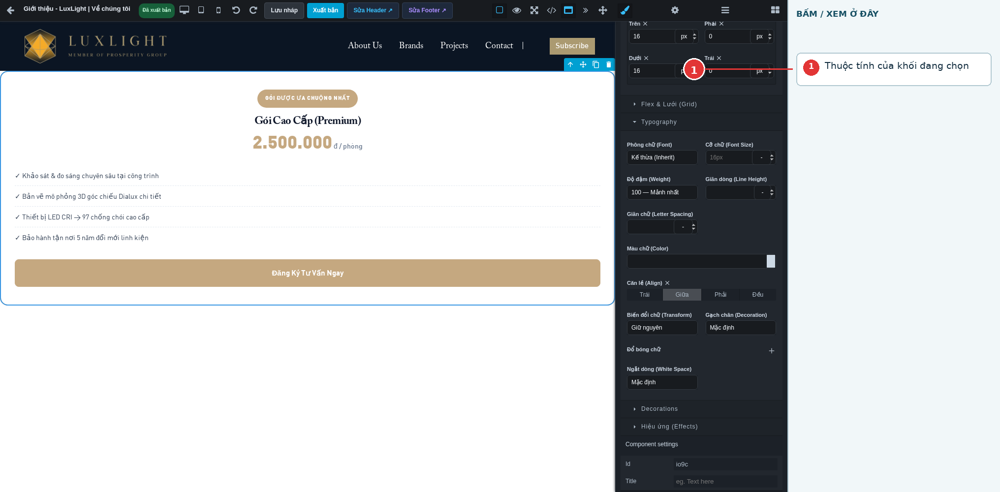
Nhóm THẺ & NỘI DUNG. Ảnh mở đúng bảng chỉnh sửa của khối.- Kéo khối Bảng Giá (Pricing) vào trang.
- Bấm vào khối vừa thêm để thay nội dung mẫu trong vùng chỉnh sửa bên phải.
- Kiểm tra hiển thị và lưu nháp trước khi thêm khối tiếp theo.
SỔ TAY UI/UX BUILDERHƯỚNG DẪN BẰNG ẢNHKhối 21: Đánh Giá (Review)
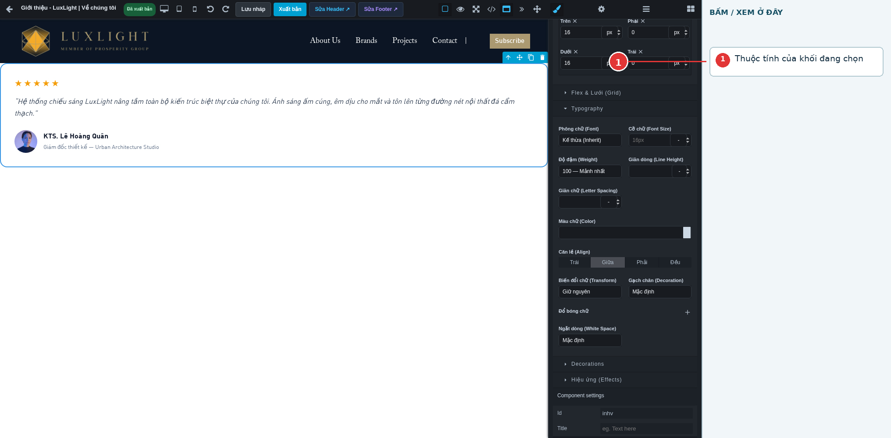
Nhóm THẺ & NỘI DUNG. Ảnh mở đúng bảng chỉnh sửa của khối.- Kéo khối Đánh Giá (Review) vào trang.
- Bấm vào khối vừa thêm để thay nội dung mẫu trong vùng chỉnh sửa bên phải.
- Kiểm tra hiển thị và lưu nháp trước khi thêm khối tiếp theo.
SỔ TAY UI/UX BUILDERHƯỚNG DẪN BẰNG ẢNHKhối 22: Bộ Đếm Số
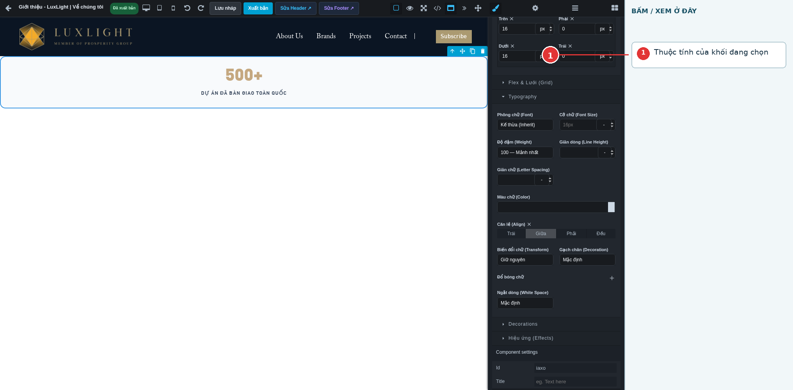
Nhóm THẺ & NỘI DUNG. Ảnh mở đúng bảng chỉnh sửa của khối.- Kéo khối Bộ Đếm Số vào trang.
- Bấm vào khối vừa thêm để thay nội dung mẫu trong vùng chỉnh sửa bên phải.
- Kiểm tra hiển thị và lưu nháp trước khi thêm khối tiếp theo.
SỔ TAY UI/UX BUILDERHƯỚNG DẪN BẰNG ẢNHKhối 23: Danh Sách Tick
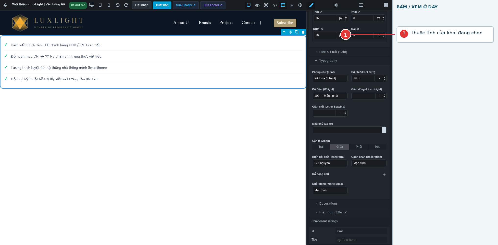
Nhóm THẺ & NỘI DUNG. Ảnh mở đúng bảng chỉnh sửa của khối.- Kéo khối Danh Sách Tick vào trang.
- Bấm vào khối vừa thêm để thay nội dung mẫu trong vùng chỉnh sửa bên phải.
- Kiểm tra hiển thị và lưu nháp trước khi thêm khối tiếp theo.
SỔ TAY UI/UX BUILDERHƯỚNG DẪN BẰNG ẢNHKhối 24: Khối Trích Dẫn
Nhóm THẺ & NỘI DUNG. Ảnh mở đúng bảng chỉnh sửa của khối.- Kéo khối Khối Trích Dẫn vào trang.
- Bấm vào khối vừa thêm để thay nội dung mẫu trong vùng chỉnh sửa bên phải.
- Kiểm tra hiển thị và lưu nháp trước khi thêm khối tiếp theo.
SỔ TAY UI/UX BUILDERHƯỚNG DẪN BẰNG ẢNHKhối 25: Hộp Thông Báo
Nhóm THẺ & NỘI DUNG. Ảnh mở đúng bảng chỉnh sửa của khối.- Kéo khối Hộp Thông Báo vào trang.
- Bấm vào khối vừa thêm để thay nội dung mẫu trong vùng chỉnh sửa bên phải.
- Kiểm tra hiển thị và lưu nháp trước khi thêm khối tiếp theo.
SỔ TAY UI/UX BUILDERHƯỚNG DẪN BẰNG ẢNHKhối 26: Hỏi Đáp (FAQ)
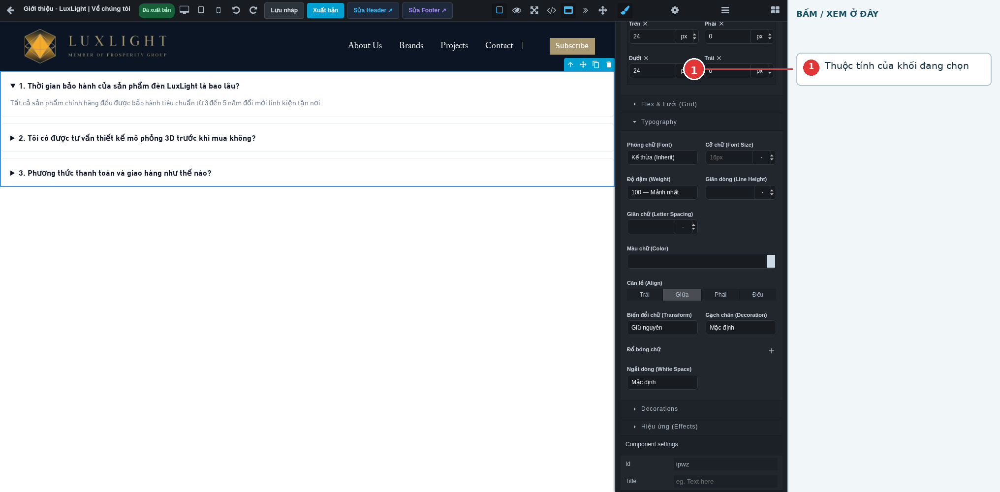
Nhóm TƯƠNG TÁC & TIỆN ÍCH. Ảnh mở đúng bảng chỉnh sửa của khối.- Kéo khối Hỏi Đáp (FAQ) vào trang.
- Bấm vào khối vừa thêm để thay nội dung mẫu trong vùng chỉnh sửa bên phải.
- Kiểm tra hiển thị và lưu nháp trước khi thêm khối tiếp theo.
SỔ TAY UI/UX BUILDERHƯỚNG DẪN BẰNG ẢNHKhối 27: Mạng Xã Hội
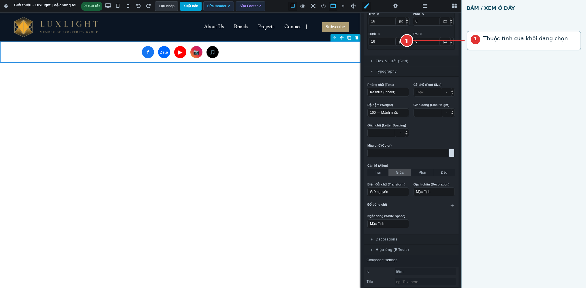
Nhóm TƯƠNG TÁC & TIỆN ÍCH. Ảnh mở đúng bảng chỉnh sửa của khối.- Kéo khối Mạng Xã Hội vào trang.
- Bấm vào khối vừa thêm để thay nội dung mẫu trong vùng chỉnh sửa bên phải.
- Kiểm tra hiển thị và lưu nháp trước khi thêm khối tiếp theo.
SỔ TAY UI/UX BUILDERHƯỚNG DẪN BẰNG ẢNHKhối 28: Bản Đồ (Maps)
Nhóm TƯƠNG TÁC & TIỆN ÍCH. Ảnh mở đúng bảng chỉnh sửa của khối.- Kéo khối Bản Đồ (Maps) vào trang.
- Bấm vào khối vừa thêm để thay nội dung mẫu trong vùng chỉnh sửa bên phải.
- Kiểm tra hiển thị và lưu nháp trước khi thêm khối tiếp theo.
SỔ TAY UI/UX BUILDERHƯỚNG DẪN BẰNG ẢNHKhối 29: Mã HTML Tùy Ý
Nhóm TƯƠNG TÁC & TIỆN ÍCH. Ảnh mở đúng bảng chỉnh sửa của khối.- Kéo khối Mã HTML Tùy Ý vào trang.
- Bấm vào khối vừa thêm để thay nội dung mẫu trong vùng chỉnh sửa bên phải.
- Kiểm tra hiển thị và lưu nháp trước khi thêm khối tiếp theo.
SỔ TAY UI/UX BUILDERHƯỚNG DẪN BẰNG ẢNHKhối 30: Thư Viện Ảnh
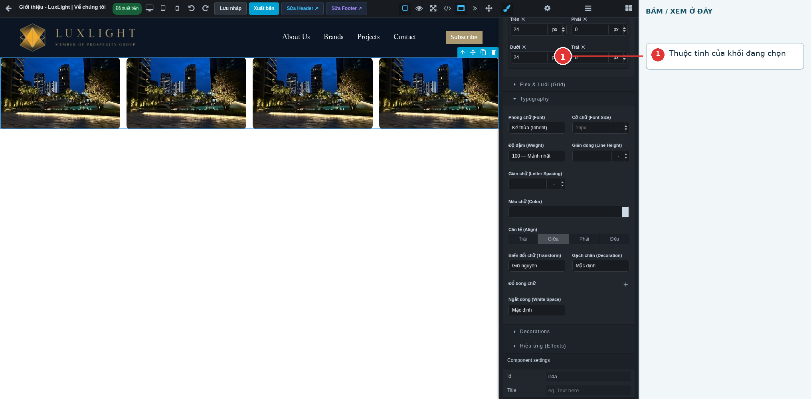
Nhóm TƯƠNG TÁC & TIỆN ÍCH. Ảnh mở đúng bảng chỉnh sửa của khối.- Kéo khối Thư Viện Ảnh vào trang.
- Bấm vào khối vừa thêm để thay nội dung mẫu trong vùng chỉnh sửa bên phải.
- Kiểm tra hiển thị và lưu nháp trước khi thêm khối tiếp theo.
SỔ TAY UI/UX BUILDERHƯỚNG DẪN BẰNG ẢNHKhối 31: Lưới Sản Phẩm
Nhóm DỮ LIỆU ĐỘNG. Ảnh mở đúng bảng chỉnh sửa của khối.- Kéo khối Lưới Sản Phẩm vào trang.
- Chọn khối, mở Thuộc tính ở bên phải và chọn dữ liệu/số lượng phù hợp.
- Không sửa từng mục mẫu trên canvas; chỉnh dữ liệu nguồn trong khu vực quản lý tương ứng.
SỔ TAY UI/UX BUILDERHƯỚNG DẪN BẰNG ẢNHKhối 32: Tabs Sản Phẩm
Nhóm DỮ LIỆU ĐỘNG. Ảnh mở đúng bảng chỉnh sửa của khối.- Kéo khối Tabs Sản Phẩm vào trang.
- Chọn khối, mở Thuộc tính ở bên phải và chọn dữ liệu/số lượng phù hợp.
- Không sửa từng mục mẫu trên canvas; chỉnh dữ liệu nguồn trong khu vực quản lý tương ứng.
SỔ TAY UI/UX BUILDERHƯỚNG DẪN BẰNG ẢNHKhối 33: Danh Mục Sản Phẩm
Nhóm DỮ LIỆU ĐỘNG. Ảnh mở đúng bảng chỉnh sửa của khối.- Kéo khối Danh Mục Sản Phẩm vào trang.
- Chọn khối, mở Thuộc tính ở bên phải và chọn dữ liệu/số lượng phù hợp.
- Không sửa từng mục mẫu trên canvas; chỉnh dữ liệu nguồn trong khu vực quản lý tương ứng.
SỔ TAY UI/UX BUILDERHƯỚNG DẪN BẰNG ẢNHKhối 34: Bài Viết Mới
Nhóm DỮ LIỆU ĐỘNG. Ảnh mở đúng bảng chỉnh sửa của khối.- Kéo khối Bài Viết Mới vào trang.
- Chọn khối, mở Thuộc tính ở bên phải và chọn dữ liệu/số lượng phù hợp.
- Không sửa từng mục mẫu trên canvas; chỉnh dữ liệu nguồn trong khu vực quản lý tương ứng.
SỔ TAY UI/UX BUILDERHƯỚNG DẪN BẰNG ẢNHKhối 35: Lưới Dự Án
Nhóm DỮ LIỆU ĐỘNG. Ảnh mở đúng bảng chỉnh sửa của khối.- Kéo khối Lưới Dự Án vào trang.
- Chọn khối, mở Thuộc tính ở bên phải và chọn dữ liệu/số lượng phù hợp.
- Không sửa từng mục mẫu trên canvas; chỉnh dữ liệu nguồn trong khu vực quản lý tương ứng.
SỔ TAY UI/UX BUILDERHƯỚNG DẪN BẰNG ẢNHKhối 36: Đánh Giá Mới
Nhóm DỮ LIỆU ĐỘNG. Ảnh mở đúng bảng chỉnh sửa của khối.- Kéo khối Đánh Giá Mới vào trang.
- Chọn khối, mở Thuộc tính ở bên phải và chọn dữ liệu/số lượng phù hợp.
- Không sửa từng mục mẫu trên canvas; chỉnh dữ liệu nguồn trong khu vực quản lý tương ứng.
SỔ TAY UI/UX BUILDERHƯỚNG DẪN BẰNG ẢNHKhối 37: Form Liên Hệ
Nhóm DỮ LIỆU ĐỘNG. Ảnh mở đúng bảng chỉnh sửa của khối.- Kéo khối Form Liên Hệ vào trang.
- Chọn khối, mở Thuộc tính ở bên phải và chọn dữ liệu/số lượng phù hợp.
- Không sửa từng mục mẫu trên canvas; chỉnh dữ liệu nguồn trong khu vực quản lý tương ứng.
SỔ TAY UI/UX BUILDERHƯỚNG DẪN BẰNG ẢNHKhối 38: Khối Dùng Chung (Partial)
Nhóm DỮ LIỆU ĐỘNG. Ảnh mở đúng bảng chỉnh sửa của khối.- Kéo khối Khối Dùng Chung (Partial) vào trang.
- Chọn khối, mở Thuộc tính ở bên phải và chọn dữ liệu/số lượng phù hợp.
- Không sửa từng mục mẫu trên canvas; chỉnh dữ liệu nguồn trong khu vực quản lý tương ứng.